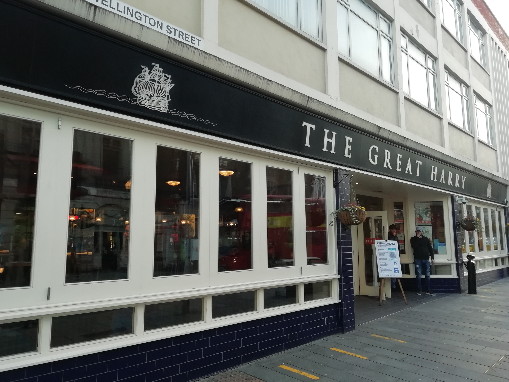
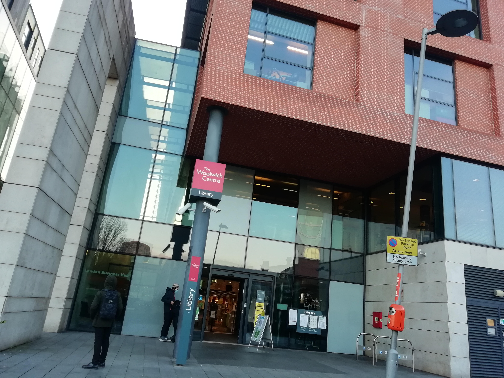
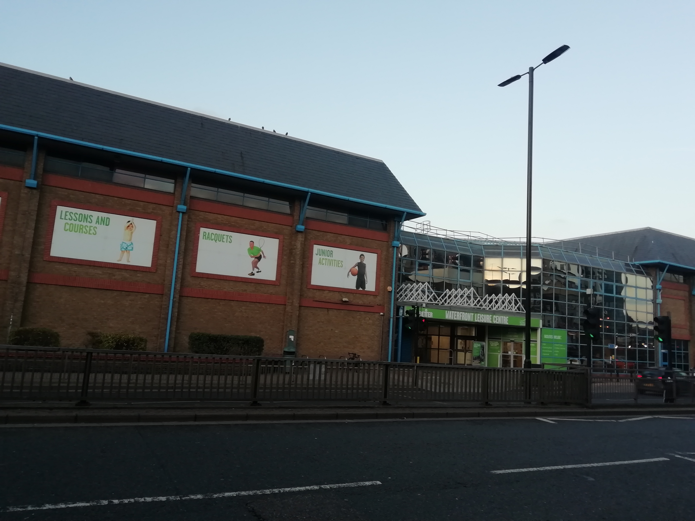

Explore the historical sights of Woolwich. The Royal Arsenal has a vast amount of significance in this nation's history-- these cannons are centuries old!
No English town is complete without a local wetherspoons. Have a great night without burning a hole in your wallet-- Only at The Great Harry


Not much of a party person? That's fine because 1 minute away from 'spoons is The Woolwich Centre, a fantastic library with great resources for you bookworms out there
Like to keep active? Visit The Waterfront Leisure centre, a comprehensive facility that has a multitude of activites such as: Swimming, 2 Gyms, Badminton, Basketball & more!
